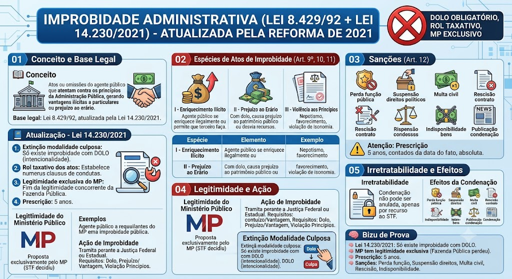

CORREÇÃO E ATUALIZAÇÃO
Improbidade administrativa após a Lei 14.230/2021
A Lei 8.429/1992 exige conduta dolosa tipificada; a mera ilegalidade ou voluntariedade não basta. Os arts. 9º, 10 e 11 descrevem hipóteses distintas, com requisitos próprios. O STF, nas ADIs 7042 e 7043, reconheceu legitimidade ativa concorrente do Ministério Público e das pessoas jurídicas públicas lesadas. A prescrição da pretensão sancionadora é, como regra legal, de oito anos, com causas de suspensão e interrupção no art. 23; não é prazo fixo de cinco anos nem “absoluto e irretratável”. As sanções dependem do tipo e dos limites do art. 12 e podem ser aplicadas isolada ou cumulativamente, com proporcionalidade; não use a antiga faixa geral de dois a dez anos.
Fonte oficial: consultar legislação e entendimento aplicável
O que é Improbidade Administrativa?
O que é Improbidade Administrativa?
É o conjunto de atos ou omissões do agente público que atentam contra os princípios da Administração Pública, gerando vantagens ilícitas a particulares ou prejuízo ao erário. A improbidade é um fato jurídico material que pode ser sanado por meio de ação civil pública ou ação de improbidade administrativa.
Base legal: Lei 8.429/92 (Lei de Improbidade Administrativa), atualizada pela Lei 14.230/2021.
Atualização — Lei 14.230/2021
Atualização — Lei 14.230/2021
A Lei 14.230/2021 reformulou a Lei 8.429/92, trazendo mudanças cruciais:
1. Extinção da modalidade culposa: A nova lei extinguiu a modalidade culposa de improbidade. Agora, só existem atos de improbidade com DOLO (intencionalidade).
2. Rol taxativo de atos: A lei estabelece um rol taxativo (numerus clausus) dos atos que importam enriquecimento ilícito, prejuízo ao erário e violação aos princípios.
I — Enriquecimento Ilícito
I — Enriquecimento Ilícito
Ocorre quando o agente público, em prejuízo do erário, enriquece ilegalmente ou permite que terceiro o faça. É um ato de improbidade que resulta em vantagem indevida para o agente ou terceiro.
Exemplos: Desvio de recursos públicos, aceitação de propina, apropriação indébita de bens públicos.
II — Prejuízo ao Erário
II — Prejuízo ao Erário
Ocorre quando o agente público, com dolo, causa prejuízo ao patrimônio público ou à fazenda pública, ou desvia recursos de destinação legal.
Exemplos: Contratos fraudulentos, licitações suspeitas, desvio de recursos de saúde ou educação.
III — Violência aos Princípios
III — Violência aos Princípios
Ocorre quando o agente público, com dolo, viola os princípios da Administração Pública (legalidade, impessoalidade, moralidade, publicidade, eficiência, entre outros).
Exemplos: Nepotismo, favorecimento de amigos, atos de favorecimento político, violação do princípio da isonomia.
Sanções Aplicáveis
⚠️ Prescrição
⚠️ Prescrição
Legitimidade do Ministério Público
Legitimidade do Ministério Público
Lei 14.230/2021: A ação de improbidade administrativa é proposta exclusivamente pelo Ministério Público, com fim da legitimidade concorrente da Fazenda Pública na Ação Civil Pública de improbidade.
Decisão do STF: O STF decidiu que a Fazenda Pública não pode mais propor ação civil pública de improbidade administrativa — a competência é exclusiva do MP. A Fazenda Pública pode ainda propor ações de recuperação de valores (não de improbidade), mas não ações de improbidade propriamente ditas.
Ação Civil Pública de Improbidade
Ação Civil Pública de Improbidade
A ação civil pública de improbidade administrativa é o instrumento processual para a persecução dos atos de improbidade. É proposta pelo MP e tramita perante a Justiça Federal (quando o caso envolve a União) ou Justiça Estadual (quando envolve Estados, DF ou Municípios).
Requisitos:
- Dolo do agente público (não há mais modalidade culposa);
- Prejuízo ao erário ou vantagem ilícita;
- Violação aos princípios da Administração Pública.
Extinção da Modalidade Culposa
Extinção da Modalidade Culposa
Lei 14.230/2021: A reforma da Lei de Improbidade extinguiu a modalidade culposa. Antes, a improbidade podia ser dolosa (intencional) ou culposa (por negligência). Agora, só existem atos de improbidade com DOLO.
Consequência: Apenas atos praticados com intencionalidade (dolo) configuram improbidade administrativa. Atos praticados por negligência ou imprudência não enseñam sanções de improbidade, mas podem gerar responsabilidade civil ou administrativa comum.
Irretratabilidade
Irretratabilidade
A condenação por improbidade administrativa é irretratável, ou seja, não pode ser anulada por meio de ação de anulação. A única forma de atacar a condenação é por meio de recurso ordinário ou recurso especial perante o STF.
Efeitos da Condenação
🧠 Bizu de Prova
🧠 Bizu de Prova
Mapa-mental
Material de estudo: Improbidade Administrativa (Lei 8.429/92 + Lei 14.230/2021)
Material complementar · Ver fonte no GitHub
Conceito e Base Legal
Atualização — Lei 14.230/2021
A Lei 14.230/2021 reformulou a Lei 8.429/92, trazendo mudanças cruciais:
1. Extinção da modalidade culposa: A nova lei extinguiu a modalidade culposa de improbidade. Agora, só existem atos de improbidade com DOLO (intencionalidade).
2. Rol taxativo de atos: A lei estabelece um rol taxativo (numerus clausus) dos atos que importam enriquecimento ilícito, prejuízo ao erário e violação aos princípios.
Espécies de Atos de Improbidade (Art. 9º, Lei 8.429/92)
Rol Taxativo dos Atos de Improbidade
| Espécie | Elemento | Exemplo |
|---|---|---|
| Enriquecimento Ilícito | Dolo + vantagem indevida | Aceitar propina |
| Prejuízo ao Erário | Dolo + prejuízo ao patrimônio público | Contrato fraudulento |
| Violação aos Princípios | Dolo + violação a princípio da Administração | Nepotismo |
Sanções (Art. 12º, Lei 8.429/92)
Sanções Aplicáveis
- Perda da função pública — afastamento do cargo ou função.
- Multa civil — de 100 a 100.000 vezes o valor do prejuízo ou vantagem ilícita.
- Rescisão de contrato administrativo — anulação do contrato com a Administração.
- Indisponibilidade de bens — suspensão do direito de dispor de bens até o esclarecimento da conduta.
- Publicação da condenação — divulgação da condenação em veículos de comunicação.
⚠️ Prescrição
Princípio da Irretratabilidade e Efeitos da Condenação
Efeitos da Condenação
- Perda da função pública — afastamento imediato do cargo ou função.
- Multa civil — de 100 a 100.000 vezes o valor do prejuízo ou vantagem ilícita.
- Rescisão de contrato — anulação de contratos administrativos celebrados pelo condenado.
- Indisponibilidade de bens — suspensão do direito de dispor de bens até o esclarecimento da conduta.
🧠 Bizu de Prova
Lei 14.230/2021: Só existe improbidade com DOLO (não mais culposa).
Prescrição: 5 anos.
Sanções: perda da função, suspensão de direitos políticos, multa civil, rescisão de contrato, indisponibilidade de bens.
Mapa-mental
